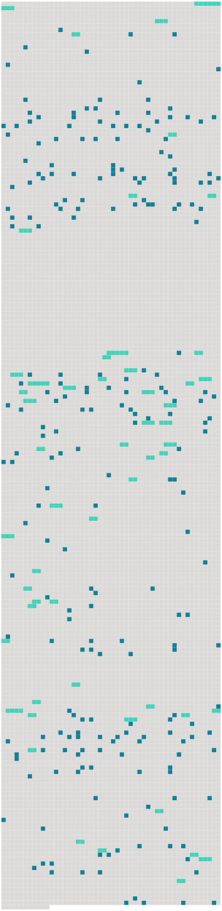

Longueur nb maillons : 289 mentions |
 |
Sans même prendre la peine d'allumer un feu, chacun improvisa son repas de quelques conserves froides, puis se roula dans sa couverture, et s'endormit, confiant la garde du campement au chien « Turko », qui appartenait à [un jeune ingénieur du nom de Roger de Ville] [5 phrases]
Mais dans tous les cas, les pauvres naufragés se confiaient en la Providence, qui ne pouvait pas les abandonner, et leur viendrait certainement en aide. [3 phrases] [Roger] et Paul partirent donc, vers les neuf heures, de l'avant-midi. [1 phrases] Il fut décidé qu'on laisserait Turko en campement ; mais lorsque le chien vit partir [son maître] , il fut impossible de le retenir.
Au fond, [Roger] , n'était pas fâché de l'emmener, [il] n'aimait pas à être séparé longtemps du fidèle animal. [2 phrases]
Ce ne fut que vers le soir, que [Roger] et Paul atteignirent le haut de la montagne. [2 phrases]
» [8 phrases] Bientôt, [Roger] et Paul s'arrêtèrent, ils avaient atteint le bord de la mer, et c'est là qu'ils voulaient passer la nuit. [1 phrases] Mais nul vestige de végétation ne s'y voyait, et par des signes, qui ne pouvaient tromper les yeux experts de [Roger] , les deux jeunes gens comprirent que cet endroit avait été récemment visité par un tremblement de terre. [4 phrases]
Une Grande Découverte [6 phrases]
Tout à coup, [Roger] posa la main sur le bras de Paul :
… » [3 phrases] — « C'est singulier, dit [Roger] , [j'] ai envie de plonger et d'aller à la découverte.
»
» [Je] vais m'attacher le câble autour de la taille et plonger tout simplement. L'eau est si limpide que tu pourras suivre tous [mes] mouvements, et si tu vois que [je] courre un danger, tu haleras le câble, et tout sera dit.
» [Il] n'y resta pas longtemps.
D'un coup de talon sur le monstre, [il] revint à la surface. — « Hale le câble, cria-t [-il] , hale, hale!!
» [1 phrases]
… » [3 phrases] » reprit Paul aussi excité que [son ami] , maintenant ; ce bateau sous-marin, dont les aventures extraordinaires ont tant amusé et intrigué notre imagination d'enfant. Es [-tu] bien sûr de ce que [tu] avances, [Roger] ??
» [3 phrases]
» À quoi te sert -il donc d'être mécanicien, s'il faut que [je] te prête des idées comme celles -ci, qui sont absolument de ton domaine, il [me] semble.
» [2 phrases]
[Roger] , [qui] avait une imagination romanesque, et paraissait parfois bien extravagante à [son] placide ami, lui dit tout à coup : … lorsque [je] lisais l'histoire du « Nautilus », [je] rêvais d'habiter une ville sous-marine, avec un petit peuple de [mon] choix ; la terre avec toutes ses misères [me] semblait un domaine trop mesquin. Une ville sous-marine, reprit [Roger] en s'exaltant, ce serait l'idéal.
»
» [1 phrases]
» En ce moment, Turko se mit à gambader et à lécher la main de [son maître] , ce qu'il faisait toujours quand il était content : « Vois, reprit [Roger] , Turko approuve [mon] projet, ce doit être de bon augure.
» [1 phrases] On pensera certainement que [tu] as perdu la raison.
» [J'] irai seul habiter sous l'eau, si personne ne veut [me] suivre, mais [j'] irai.
»
» [2 phrases]
Tous connaissaient l'histoire du « Nautilus » et du capitaine Nemo, et au grand étonnement de Paul, lorsque [Roger] , sans beaucoup de préambules, proposa [son] plan de ville sous-marine, [il] ne rencontra pas l'opposition qu'il avait redoutée. Quelques-uns à peine firent de faibles objections, mais d'autres, parmi ceux qui avaient beaucoup souffert de la méchanceté des hommes sur la terre, témoignèrent un véritable enthousiasme pour l'idée originale [du jeune ingénieur] [74 phrases]
L'abbé l'ouvrit et lut ce qui suit : [Le gouverneur] a des choses importantes à communiquer et une proposition à faire.
» [9 phrases] Il jouait la prière de Gounod, et mettait si bien toute son âme dans son jeu qu'il n'entendit pas entrer [un jeune homme] , [qui] s'arrêta à l'entrée de la pièce pour l'écouter.
L'abbé se retournant enfin, aperçut [le nouveau venu] , [qui] lui dit :
» J'espère qu' [il] ne tardera pas à venir, car je suis pressé de retourner chez moi.
»
»
» Tous les habitants de cette ville, à l'exception d' [un seul] , étaient heureux de [me] confier une charge aussi importante.
» Et [Roger] se mit à rire avec l'insouciance de [sa] jeunesse. « [Monsieur le gouverneur] , seriez [-vous] assez bon de me dire immédiatement ce que [vous] avez à me communiquer, je suis pressé de retourner chez moi. Mais permettez -moi de [vous] dire que vous avez de singulières manières d'agir, dans cette ville …… [1 phrases] Ces façons ne sauraient avoir mon approbation, [vous] ne devez pas en douter, [monsieur le gouverneur]
» [Je] dois, d'abord, vous raconter l'origine de cette ville ; elle ne date que de deux ans.
»
» — « Depuis l'enfance, ajouta-t [-il] , [je] rêvais d'habiter une ville sous-marine, et [mon] rêve s'est réalisé …… [1 phrases] Notre ville, monsieur l'abbé, [je] vous la ferai voir demain, et [je] suis certain qu'elle vous intéressera. [1 phrases] — « C'est vraiment merveilleux ce que [vous] venez de me dire, cela tient de la féerie, et je [vous] félicite d'avoir pu réaliser un rêve si extraordinaire, ajouta-t -il en riant, beaucoup d'hommes qui ont des ambitions plus modestes ne parviennent pas toujours à les satisfaire ; [vous] êtes [un heureux mortel] , [monsieur le gouverneur] , et je me demande ce que [vous] pouvez bien désirer de moi et ce que je pourrais ajouter à [votre] bonheur. [3 phrases]
» [1 phrases] — « [Je] ne vous ai pas dit, sans doute, la raison qui [me] pousse à vous faire cette offre, c'est que tous les habitants de Némoville appartiennent à la religion catholique romaine, et que vous n'y manqueriez pas de bien à faire. [3 phrases]
Il tendit la main [au gouverneur] en disant :
» [1 phrases] Voici votre chambre, fit [-il] , en ouvrant une porte donnant sur le salon. Demain, [je] vous ferai visiter la ville. En attendant, [je] vous souhaite une bonne nuit. [3 phrases] [Le gouverneur] attendait le curé, à la porte de sa chambre, le lendemain matin.
Après s'être informé de sa santé, [il] l'accompagna dans la salle à manger, où se trouvait déjà Paul Lamontagne, qui sifflotait joyeusement, en attendant [son ami] , auprès d'une cage dans laquelle un magnifique canari égrenait des trilles savantes.
[Roger] présenta [son] ami au curé, qui lui fit aussitôt cette remarque en souriant : [2 phrases] On prolongea le déjeuner, qui fut des plus joyeux — on n'avait pas l'avantage d'un nouvel hôte souvent à Némoville — et le curé plut à [Roger] et à Paul par son esprit autant que par sa bonté, dont il donna bientôt des preuves. [1 phrases] Il avait appris, au cours de la conversation, que Paul était le secrétaire [du gouverneur] et l'en félicita.
Ce fut [Roger] [qui] répondit. [2 phrases]
» [2 phrases]
» [4 phrases] » Il reprit : « Maintenant, je suis à [vos] ordres, [monsieur le gouverneur]
» [6 phrases]
La résidence [du gouverneur] était à l'une des extrémités de la ville ; les autres résidences se groupaient comme dans les rues d'une véritable ville. L'abbé Bernard, accompagné de Paul et de [Roger] , fit la visite de sa nouvelle paroisse, et fut accueilli partout avec des démonstrations de la plus vive joie. [6 phrases]
» demanda [Roger] — « Pas trop mal, [monsieur le gouverneur] », répondit le domestique, « monsieur a bien hâte de connaître notre curé. [3 phrases] Un jour que [Roger] et Paul étaient allés à terre, ils virent un homme assis sur un rocher, et qui examinait le « Nautilus » avec attention. [1 phrases]
» [5 phrases]
» [3 phrases] On retourna à la résidence [du gouverneur] , où un lunch était servi. [1 phrases]
Il était au centre de la ville et il semblait aussi grand que le « Nautilus », mais comme ni [Roger] ni Paul n'avait proposé de le visiter, le prêtre n'osa pas le demander. [7 phrases]
Depuis la mort de son père, on eût dit qu'elle subissait l'influence de ce personnage, qui n'était guère sympathique ; quelqu'un avait même insinué que la fille de M. Richard éprouvait un sentiment plus doux pour [le gouverneur] , parce que, certains jours, elle avait rougi de plaisir en [l'] apercevant. Mais, tout cela n'était que des on-dit, et [Roger] ne semblait avoir pour Marcelle que la courtoisie ordinaire chez un homme bien élevé. [1 phrases] Il y avait deux jours que le curé Bernard était à Némoville, quand [Roger] lui proposa de faire une petite excursion de pêche à la surface de la mer.
Le curé consentit avec plaisir, et ils partirent tous trois, car Paul était de la partie ; il ne quittait [Roger] que rarement. [2 phrases] Turko, le chien [du gouverneur] , accompagnait [son maître] , selon son habitude. Or Turko était un chien sage et docile, très populaire à Némoville, il était si bien établi que Turko n'aboyait jamais sans de bonnes raisons, qu'un hurlement du chien fidèle était devenu pour [son maître] un signal certain qu'il se passait quelque chose d'extraordinaire.
[Roger] et Paul furent donc assez surpris, au retour de cette pêche miraculeuse, de voir le chien se dresser sur le bord de l'embarcation et pousser un hurlement prolongé. — « Il y a quelque chose d'extraordinaire, dit aussitôt [Roger] [4 phrases]
— « Allons voir, ajouta [Roger] , [je] prends toujours au sérieux les avertissements de Turko, car il m'a donné mille preuves de son flair », dit [-il] en s'adressant au curé. [6 phrases] La naufragée reprit bientôt ses sens, et comme on ne pouvait pas convenablement l'installer dans le « Nautilus », [Roger] demanda à Marcelle de la garder auprès d'elle, ce que celle -ci accepta avec empressement. Ce fut en rougissant de plaisir que Marcelle répondit qu'elle était heureuse de lui rendre ce service ; et elle disait la vérité, car elle pensait bien que [le gouverneur] ne manquerait pas de s'intéresser à celle qu' [il] avait sauvée de la mort, et lorsqu' [il] viendrait elle aurait l'occasion de [le] voir. [1 phrases]
L'étrangère fut déposée sur un lit et abandonnée aux soins de la vieille servante, tandis que Marcelle retournait dans le salon, où [Roger] attendait le verdict du médecin pour prendre congé. [Il] demanda à Marcelle la permission de revenir s'informer de la malade : « Mademoiselle Marcelle, dit [-il] , [me] permettez -vous de revenir prendre des nouvelles de votre protégée??
» [1 phrases] [Roger] , inconscient de l'émotion qu' [il] venait de causer, attendait la réponse, que la jeune fille articula d'une voix tremblante. [11 phrases]
Pour se mentir à elle -même, Marcelle se disait que le médecin lui avait vraiment sauvé la vie, puisqu'elle n'avait que le souffle, quand [le gouverneur] la lui avait confiée. [4 phrases] Ils parlèrent longuement ensemble, et le médecin dit en quittant la jeune fille : « N'oubliez pas que tout dépend de vous, Marcelle ; je vous promets qu'avant trois mois, vous serez la femme [du gouverneur] , si vous suivez mes conseils ; et moi j'épouserai la fille du capitaine Laurent. [2 phrases] Elle avait à peine repris sa place auprès de Gaétane, lorsque la vieille servante entra, apportant sur un plateau, la carte [du gouverneur] [1 phrases] — « [C'] est [le gouverneur de Némoville] , dit Marcelle, qui demande à être reçu ; [il] vint souvent », ajouta-t -elle, en baissant les yeux, comme si elle eût eu peur que Gaétane y pût lire le mensonge qu'elle faisait, en assurant que [le gouverneur] venait souvent chez elle. « [Celui -là] , ajouta-t -elle, j'espère que vous [l'] aimerez …… [1 phrases]
»
»
Elle présenta Gaétane, que [le jeune homme] sembla chercher des yeux, dès qu' [il] eut franchi le seuil du salon, et tous trois s'assirent et passèrent ensemble une heure de gaie causerie.
Gaétane, qui avait repris toute la fraîcheur de son âge, était vraiment éblouissante de beauté, lorsque [Roger] la regardait, rougissante et un peu timide. — « Mademoiselle, [j'] espère que vous ne vous ennuyez pas à Némoville?? [3 phrases]
»
[Il] l'avait écoutée en regardant sa compagne.
Lorsque [Roger] reprit le chemin du « Nautilus, » [il] était distrait et préoccupé, ce qui n'était pas dans [ses] habitudes ; en entrant chez [lui] , [il] rencontra Paul à qui [il] dit d'où [il] venait, et celui -ci [lui] répondit : [1 phrases] demanda [Roger] , en s'arrêtant devant [son] ami.
» [5 phrases] Cependant tous les Némovilliens n'étaient pas heureux, à commencer par [le gouverneur] , [qui] avait perdu beaucoup de [son] insouciance et de [sa] belle humeur. [Il] ne faisait pas beaucoup de progrès, auprès de Gaétane ; bien au contraire, elle semblait plus réservée et plus froide que jamais avec [lui]
Un jour qu' [il] avait voulu lui baiser la main elle l'avait retirée avec indignation et [lui] avait dit en colère : … » Puis elle avait quitté la chambre avant qu' [il] pût lui demander l'explication de sa conduite étrange.
Depuis elle [le] fuyait ostensiblement. [2 phrases]
Comme elle faisait un mouvement pour se lever et se soustraire aux protestations du médecin, la porte du salon s'ouvrit et Marcelle entra accompagné de [Roger] , [qui] resta interdit devant le groupe romanesque que présentait Gaétane et le médecin. — « Je vais [vous] recevoir dans mon boudoir, avait dit Marcelle en riant, ce serait trop dommage de déranger un si doux tête-à-tête.
»
[Il] n'avait plus reparu chez Marcelle, depuis. [11 phrases]
Vers dix heures, [Roger] dit à l'abbé : » Le curé accepta, et [Roger] le conduisit vers le centre de la ville. [3 phrases]
— « Passez le premier, monsieur l'abbé », lui dit [Roger] , et le curé ayant pénétré à l'intérieur du sous-marin, fit une exclamation de surprise et de joie. [1 phrases]
» [2 phrases] On entendit dans les couloirs des bruits de pas, c'étaient les Némovilliens qui venaient présenter leurs hommages à leur curé, et [Roger] , au nom de tous, offrit au prêtre l'église sous-marine : « Nous y avons tous travaillé, expliqua-t [-il] ; les uns ont modelé les statues, les autres ont fait les plans et les enfants eux -mêmes ont fait leur part, en recueillant sur la grève les colimaçons qui ornent le maître-autel. [3 phrases] [Roger] donna le signal de retourner chacun chez-soi, en demandant à tous de revenir lorsque la cloche annoncerait la messe de minuit.
L'abbé Bernard et [Roger] sortirent les derniers de l'église, et se dirigèrent vers le « Nautilus, » où l'abbé éprouvait le besoin de se reposer, après tant d'émotions. [7 phrases] [Le gouverneur] et son secrétaire ayant pris place aux bancs armoriés qu'on avait préparés pour eux, une main habile joua les premiers accords d'un chant de Noël. [1 phrases]
[Roger] alla au-devant de lui et l' [installa] auprès de [son] siège. Une voix douce et vibrante modulait alors les premiers mots de ce chant toujours si beau « Minuit, chrétiens. » En entendant cette voix -là, [le gouverneur] tressaillit et [son] voisin, M. Duflot, posa la main sur son cœur, comme pour en arrêter les battements. [1 phrases] Quand le chant pieux fut terminé, M. Duflot se pencha à l'oreille de [Roger] et [lui] demanda : « Qui donc chante ainsi??
»
Les deux hommes ne parlèrent plus tout le temps que dura la messe, mais en sortant de la chapelle, M. Duflot reprit la conversation où il l'avait laissée :
» [Il] ajouta : « Toute la personne de cette jeune fille a quelque chose d'éthéré, presque de surnaturel ; il semble que rien en elle ne ressemble aux autres femmes. [1 phrases] Pour [me] servir d'un vieux cliché, elle a l'air d'un ange égaré sur la terre. [1 phrases]
» [Roger] sourit, et [répondit] : « Ou bien pour son malheur.
» [2 phrases] Après la messe, tous les personnages dont il a été question dans ce chapitre moins les deux jeunes filles, Gaétane et Jeanne, se réunirent chez [le gouverneur] [8 phrases]
… » [5 phrases] … en êtes [-vous] bien certain, [Roger] ??
» |
 |
La ressource peut être téléchargée sur la page Ortolang
Si vous avez des questions ou vous voyez des erreurs, merci d'envoyer un mail à silvia.federzoni89@gmail.com
Site développé par S. Federzoni (contact)